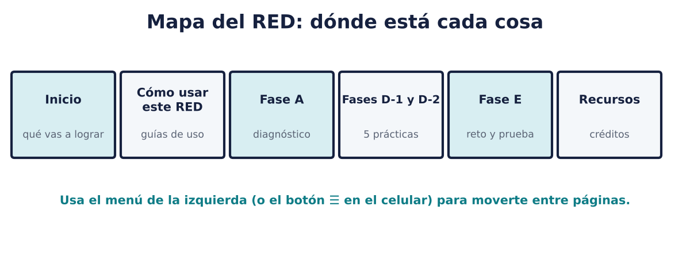
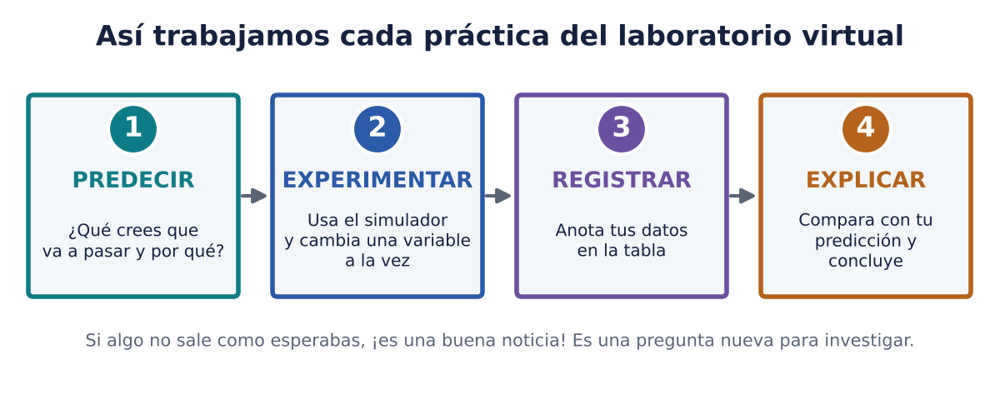

Antes de empezar
Para aprovechar el laboratorio necesitas:
- Un computador de la sala de cómputo, o un celular o tableta con Chrome, Firefox o Edge actualizado.
- Conexión a internet al abrir cada simulador. Si la señal es débil, espera a que cargue por completo antes de empezar a experimentar.
- Un cuaderno de laboratorio o un documento en el computador para registrar tus datos (cada práctica trae una tabla modelo).
- Una calculadora (la del celular sirve).
- Tu cuenta de Google Classroom para participar en el foro y entregar tus evidencias.
Plan B sin internet estable: PhET permite descargar sus simulaciones para usarlas sin conexión (ver opciones en phet.colorado.edu). Pide ayuda a tu docente: puede dejarlas copiadas en los equipos de la sala.
Cómo moverte por el RED

- Usa el menú de la izquierda para cambiar de página. En el celular aparece como un botón con tres rayas (☰).
- Cada página está dividida en bloques con título. Puedes abrirlos o cerrarlos con un clic para ordenar tu lectura.
- Los botones «Mostrar respuestas» aparecen al final de las actividades: úsalos después de intentarlo por tu cuenta.
- Las actividades con «Comprobar» te dicen si acertaste y puedes repetirlas las veces que quieras.
- Los números en círculos que ves sobre las capturas de pantalla corresponden a las tablas de «Conoce la herramienta».
Cómo trabajamos cada práctica

En todas las prácticas se repite el mismo ciclo. Antes de tocar el simulador, escribe tu predicción: aunque te equivoques, comparar lo que pensabas con lo que pasó es donde más se aprende.
| Sección de la página | Qué hay ahí | Qué debes hacer |
|---|---|---|
| Objetivo y competencias | Qué vas a lograr y cuánto tiempo toma | Leer antes de empezar |
| Para entender | Teoría con ejemplos, fórmulas y fotos reales | Leer y resolver los ejemplos |
| Conoce la herramienta | Captura numerada, tabla de controles y enlace | Ubicar cada control antes de experimentar |
| Predice | Preguntas previas | Responder en el cuaderno, sin buscar |
| Actividades | Paso a paso con preguntas en cada paso y tabla de registro | Experimentar, registrar y responder |
| Analiza y resuelve | Preguntas de análisis y problemas | Responder y comparar con las respuestas orientadoras |
| Verifica lo aprendido | Cuestionarios con retroalimentación | Resolver y repetir si hace falta |
Normas del laboratorio virtual
Que sea virtual no quiere decir que sea un juego. Para que tus resultados valgan, cumple estas normas:
- Cambia una sola variable a la vez y observa qué pasa antes de cambiar otra.
- Anota siempre las unidades (mol/L, mL, g, pH). Un número sin unidad no dice nada.
- Registra lo que ves, no lo que esperabas ver. Si tu resultado contradice tu predicción, no lo corrijas: explícalo.
- Repite al menos una medición para comprobar que obtienes el mismo resultado.
- Trabaja en parejas cuando tu docente lo indique: uno maneja el simulador y el otro anota; luego cambien de rol.
- Cita siempre las herramientas que usaste. Los simuladores son trabajo de otras personas y merecen su crédito.
- En el laboratorio real, además: usa gafas y bata, nunca pruebes un reactivo y agrega siempre el ácido al agua, nunca al revés.
Si algo falla
| Problema | Qué puedes hacer |
|---|---|
| El simulador no carga | Revisa tu conexión, recarga la página y espera 30 segundos. Prueba con otro navegador. Usa el enlace «Abrir en una pestaña nueva». |
| Se ve muy pequeño en el celular | Gira el celular en horizontal y usa el botón de pantalla completa del simulador (en el menú de PhET, abajo a la derecha). |
| La simulación va lenta | Cierra otras pestañas o aplicaciones. Si sigue lenta, trabaja en pareja con un equipo de la sala. |
| Quedó todo desordenado | Casi todos los simuladores tienen un botón naranja de reinicio (⟲). Úsalo y empieza de nuevo: no pierdes nada. |
| Las fotos no aparecen | Las fotos reales se cargan desde Wikimedia Commons y necesitan internet. El texto y las actividades funcionan igual. |
| No entiendo una instrucción | Léela otra vez en voz alta y pregunta en el foro de Classroom antes de preguntarle al docente. Seguro alguien más tiene la misma duda. |
¿Qué entregas y cuándo?
| Semana | Fase | Evidencia que subes a Classroom |
|---|---|---|
| 1 | A | Tu hipótesis en el foro y el diagnóstico resuelto |
| 2 | D-1 | Tablas de registro y respuestas de las Prácticas 1, 2 y 3 |
| 3 | D-2 | Tablas de registro y respuestas de las Prácticas 4 y 5 |
| 4 | E | Informe del reto integrador, prueba tipo Saber y autoevaluación |
Tu docente te indicará las fechas exactas de cada entrega.